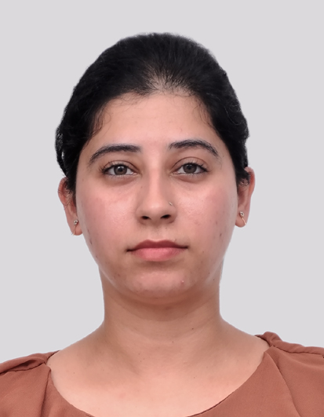

Shagun Dogra

About Me
With 4 years of experience in software development, I specialize in RESTful API design, Microservices, and Containerization, utilizing Kubernetes and Docker for end-to-end product development. Additionally, I am a certified AWS Cloud Practitioner, currently seeking a relevant Software Developer position to advance my career.
Work Experience
Software Developer
Oracle Financial Services Software,
Bangalore-India
Sept 2020 to June 2023
- Implemented microservices architecture using Spring Boot, Hibernate and Docker, leading to improved system modularity and maintainability.
- Developed Rest APIs for various banking solutions like lightweight unified payments interface (UPI) services.
- Developed orchestrated services for establishing communication between APIs.
- Provided UAT and Production support for critical services of banking and financial domain.
- Implemented continuous integration and continuous deployment (CI/CD) pipelines to automate the software delivery process.
- Provided mentorship and guidance to junior developers, fostering a culture of learning and growth within the team.
Associate IT Operation
Accenture,
Bangalore –India
October 2016 to March 2017
- Handled incidents and problems reported by users, investigated the issues and implemented the fixes ensuring minimum downtime.
- Applied patches and updates on the servers along with maintaining their reliability and scalability to meet business needs.
Educational Background
Masters | Computer Science and Engineering
National Institute of Technology,
Hamirpur, India
GPA : 8.74/10 | June 2018 to July 2020
Master Thesis : Synchronizing large scale IOTs using Machine Learning algorithms like Support Vector Machine(SVM) and Artificial Neural Networks(ANN).
- Technology used: Python, Keras, Scikit-learn, Anylogic
- Courses: Data Structures and Algorithms, Computer Networks, Cloud Computing, DBMS.
Bachelors | Computer Science and Engineering
Jaypee University of Information Technology,
Solan, India
GPA: 7.7/10 | June 2012 to July 2016
B.Tech. Thesis: Dynamic load balancing in cloud storage.
- Technology used: Java, Cloudsim simulator
Internship | BHEL |Haridwar, India | July 2015-Aug 2015
- Implemented multi banking system interface using HTML, CSS, JSP, Oracle DB and tomcat.
Skills
- Programming Languages: Java, Python, JavaScript
- API Development: Web services (SOAP/REST), SOAP UI, Postman
- Backend Development: Spring Boot, Node.js, WebLogic, Tomcat
- Web Development: HTML, CSS
- Database: Oracle DB, MySQL, MongoDB
- DevOps: Docker, Kubernetes, Jenkins, Git
- loud Platforms:C AWS, Google Cloud Platform
- Agile Methodologies: Scrum, Kanban
- Testing Tools: SonarQube, Junit, Mockito
Certification
- AWS Certified Cloud Practitioner.
- Oracle Cloud Infrastructure (OCI) Foundations certification.
- Oracle internal certifications in Domain for Banking.
Extra-curricular Activites
- Teaching Assistant: Conducted programming labs for B.Tech. students.
- Hostel Secretary: Administered girls' hostel budget covering food, sports, discipline, and cleanliness.
- Class Representative: Facilitated professor-student coordination for assignments and exams.
Hobbies and Interests
- Gardening
- Cooking
- Water and acrylic Painting
Contact Details
Linkedin